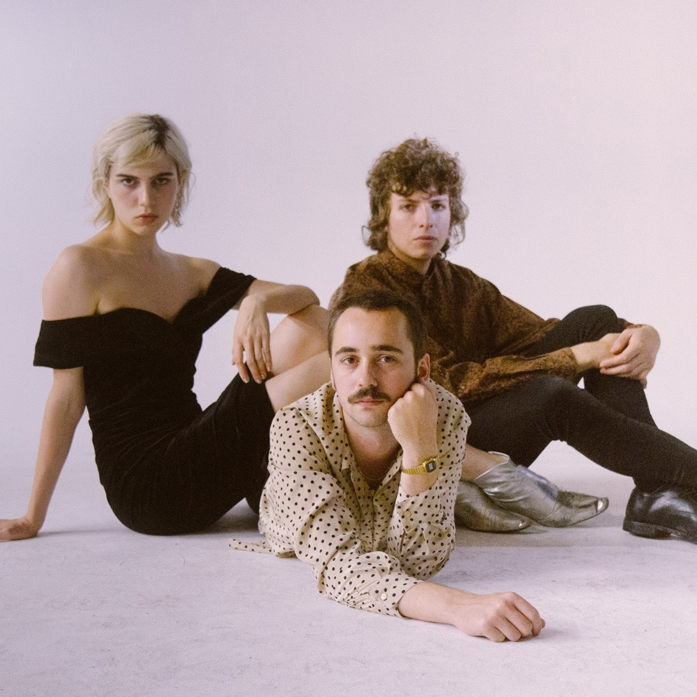
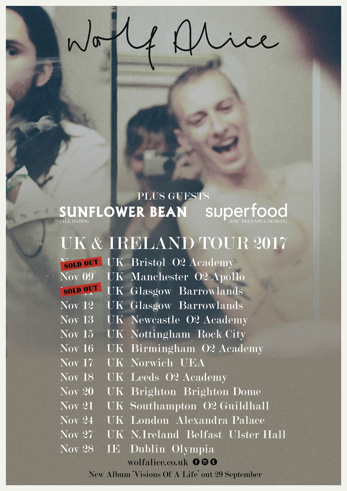

November 10, 2017

I Was A Fool Music Video by Andy DeLuca Out Now
Now watchable on Vevo!
Read More
November 3, 2017
Sunflower Bean Signs to Mom+Pop Records
We are very excited to announce that we've signed to Mom+Pop records!
Read More
August 22, 2017
Fall European Tour with Wolf ALice
Catch us this November supporting our loves Wolf Alice in the UK. It's gonna be massive!!!